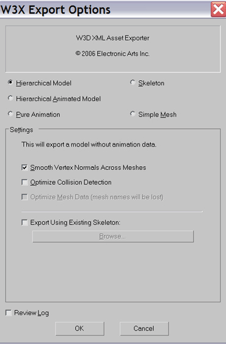
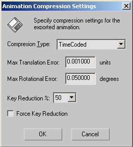

<!DOCTYPE HTML PUBLIC “-//W3C//DTD HTML 4.0 Transitional//EN”>
When you are ready to export into a W3X file.
NOTE: Be sure and check to see that the
type of export you will be doing matches what you have already selected in the
"object export options" (export tranform) and (export geometry) which is
located in the W3D in Max > W3Dtools Exporter.
Use the Export command in the File menu. Select the W3X file
type from the drop-down box in the following file selector dialog. This will
bring up the following dialog box.
For a brief tutorial on
how to export from max: (See Exporting
from max.)
| Hierarchal Model: | Use this option if you are exporting a model that will contain a hierarchy. (such as a bone) |  |
| Hierarchal Animated Model: | Use this option when you are exporting a hierarchal model with
an animation. Note: When using this option, make sure to set the number of frames you want to export with your animaiton from the frames selection below. |
|
| Pure Animation: | Use this option to export just the data for an animation. | |
| Skeleton: | This exports the hierarchy tree without any geometry or animation data. | |
| Simple Mesh: | Use this option to export a mesh (model) with no hierarchy, no bones, and no animation. | |
| Settings: | These extra ettings become available depending on which type of export you have selected. | |
| Smooth Vertex Normals Across Meshes | Smooths the look of curved surfaces. | |
| Optimize Collision Detection | Creates additional data to make mouse picking and collision detection faster. Increase file/memory size though. | |
| Export Using Existing Skeleton: | You can use this option if you are exporting a hierarchial model, a hierarchial animated model or pure animation. It allows you to select a skeleton. | |
| Browse | Lets you browse for an existing skelton you wish to use. | |
| Frames: | Use this to set from which frame to which frame you plan to export. Make sure to set these when exporting animation data. | |
|
Usually just check the checkbox for animation compression, but leave the default values in the settings dialog as they are |
||
| Compress: | Opens the compression settings box to specify how you want the files compressed. |  |
| Compression Type | ? | |
| TimeCoded | ? | |
| Adaptive Delta | ? | |
| Max Translation Error: | ? | |
| Max Rotational Error: | ? | |
| Key Reduction % | ? | |
| Force Key Reduction | ? | |
| Review Log: | This opens a window that contains the various information about what was being exported. Just so you can review what you've done if so desired. | |